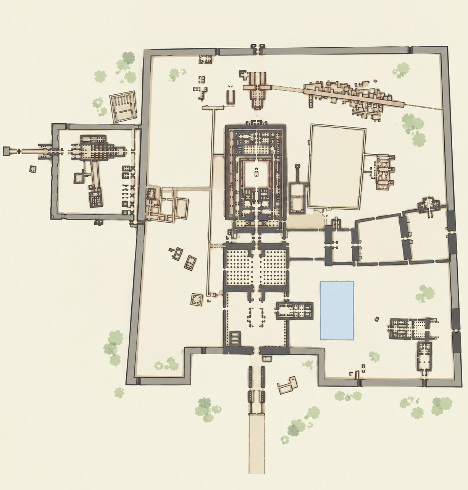

🏛️ 卡纳克神庙·智能语音微导览

🗺️
平面图待放置：images/map.jpg
1
2
3
4
5
6
7
8
9
10
11
12
13
14
15
16
17
18
19
20
21
22
23
24
25
26
27
28
⤢
🔊 请点击地图上的金色圆点开启讲解
播放
🔮
法老密示：
游客，点击地图上的金色圆点即可聆听三千年的石头说话。若有历史疑问，尽管在此向我发问……
提问
×
播放
--:-- / --:--
1.0x